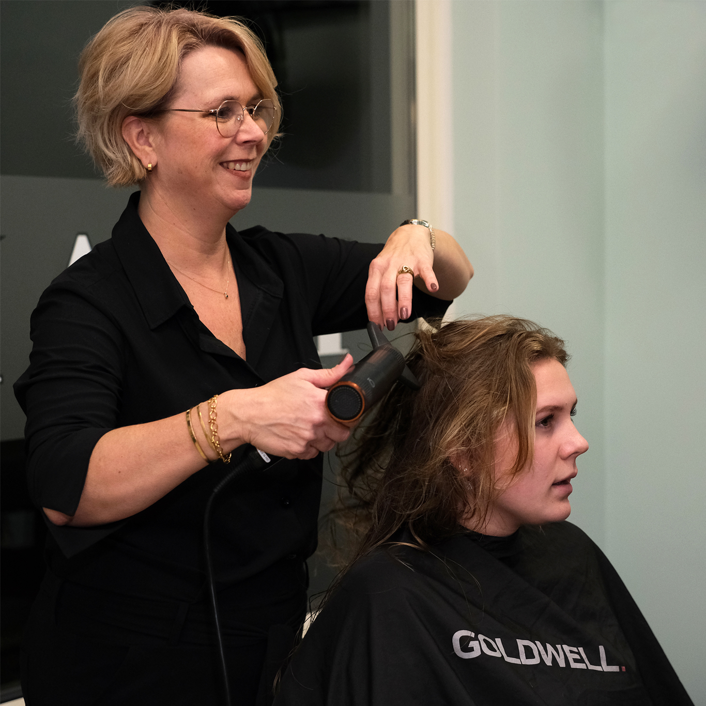
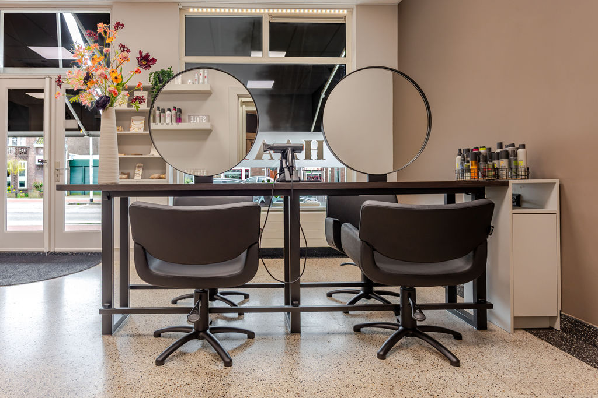
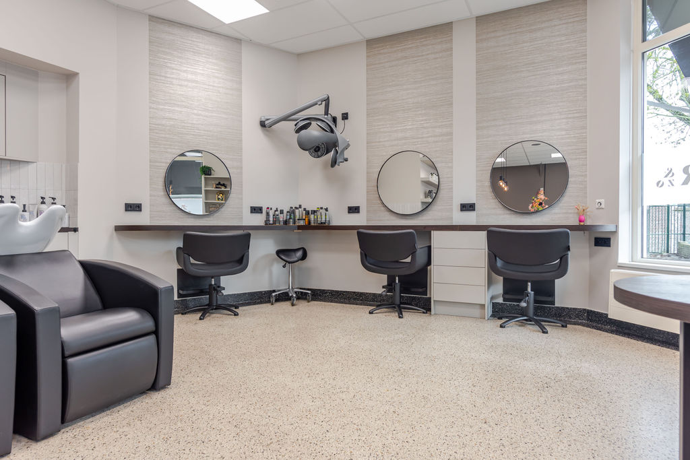
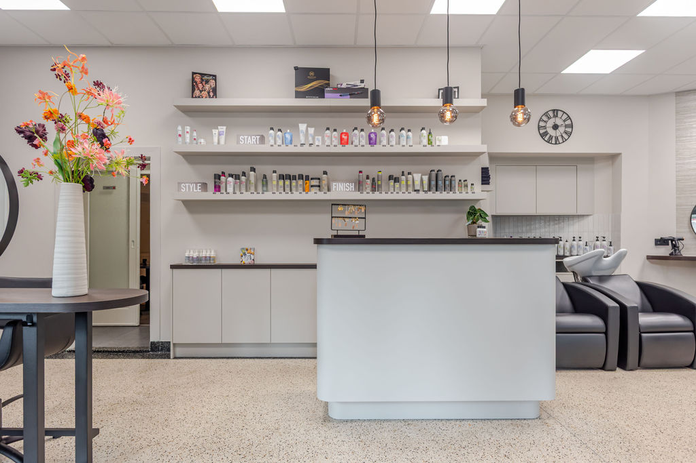
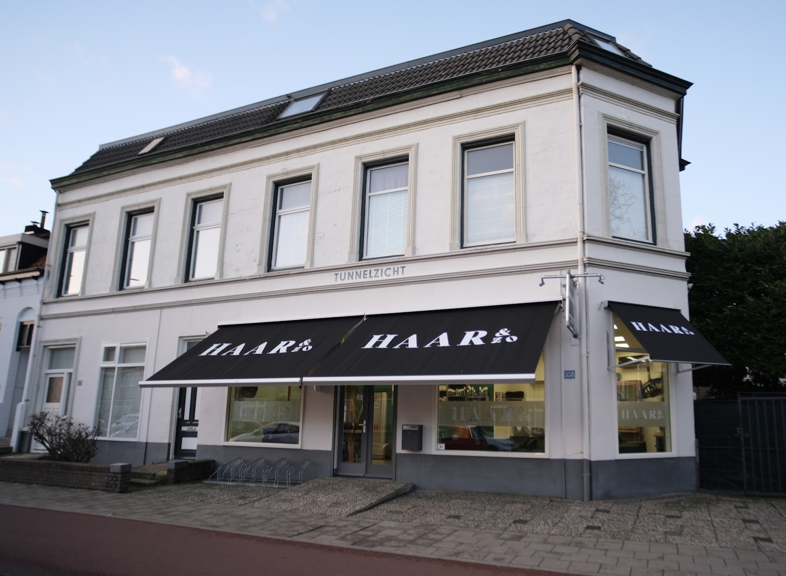
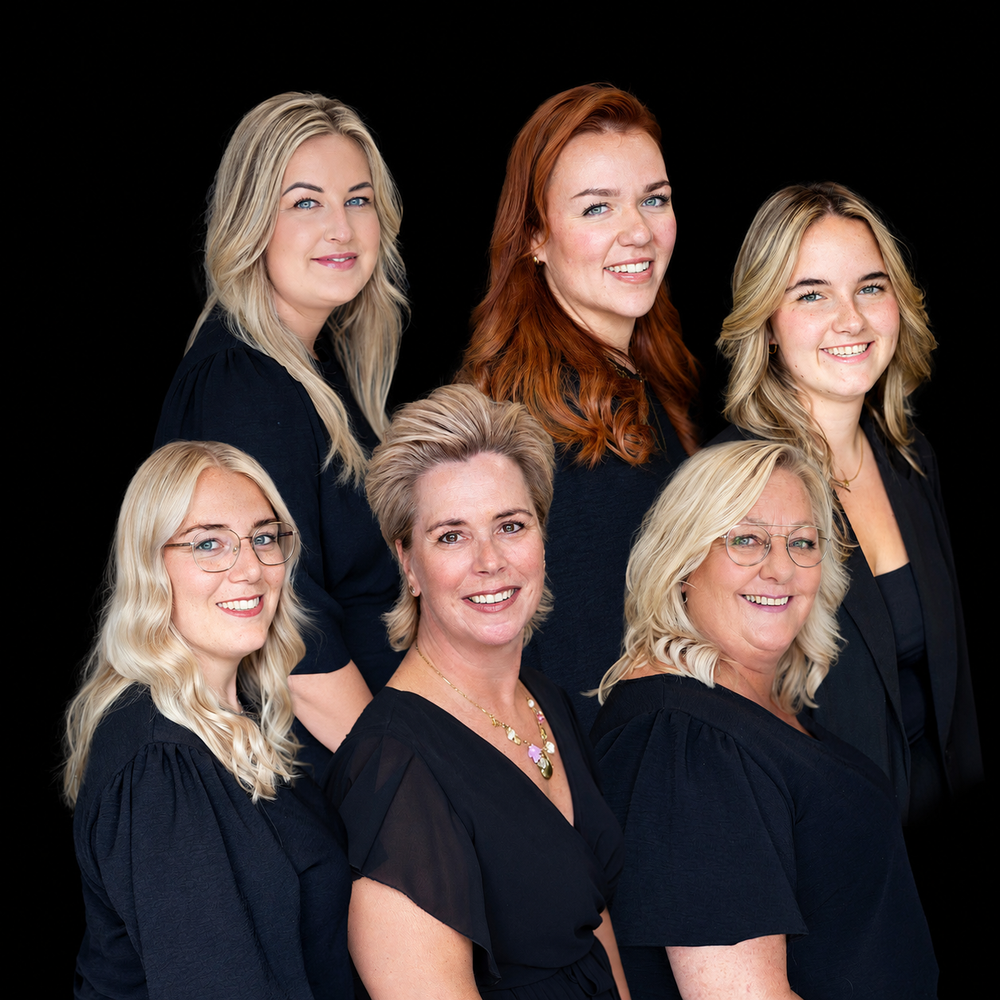
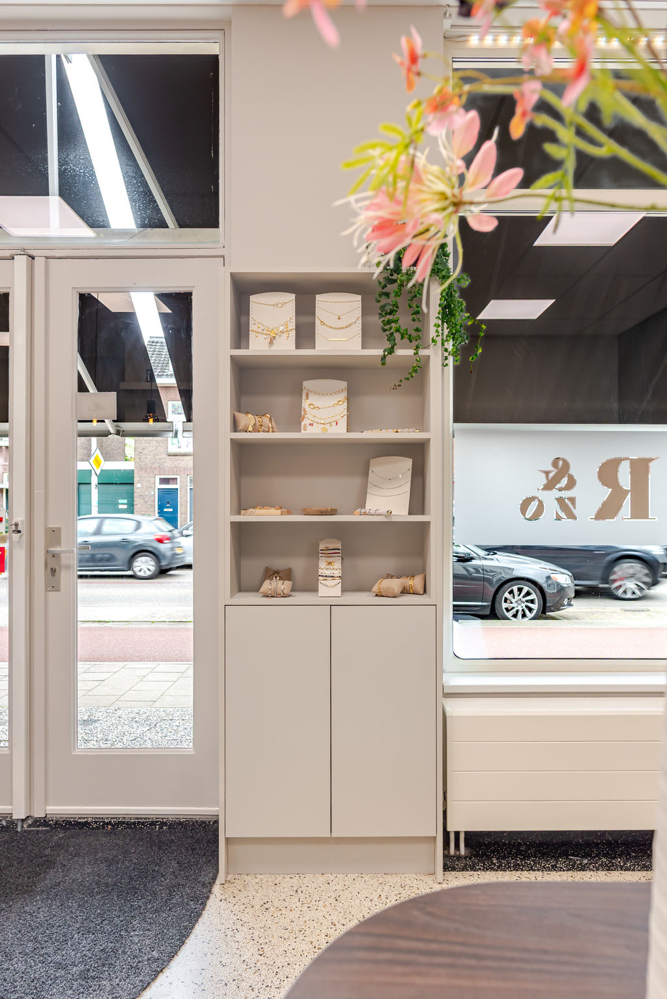
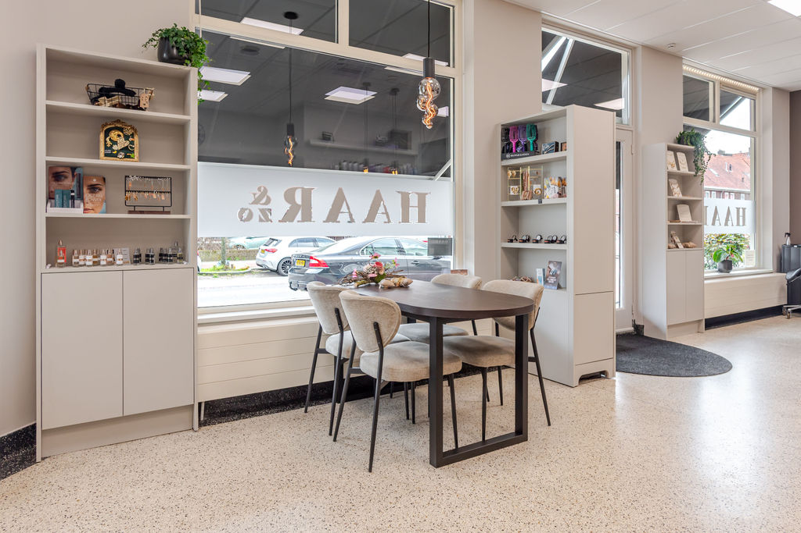

Allergisch voor haarverf? Je kunt toch kleuren.
Elumen van Goldwell is een PPD-, ammonia- en peroxidevrije kleuring. Twijfel je of het bij jou past? Bel ons even, dan bespreken we het samen.
Bel 024 378 59 67Kapsalon aan de Tweede Oude Heselaan, Nijmegen
Gezellige kapsalon met persoonlijke aandacht.
Zes kapsters die met passie aan jouw kapsel werken. Voor knippen, kleuren of een mooie blow out, voor dames, heren en kinderen.

Maandag en woensdag open tot 20:00
Vrijdag en zaterdag al vanaf 08:00
Google: 4.6 uit 172 reviews
Alle openingstijdenIn onze volledig vernieuwde salon staan kwaliteit, persoonlijke aandacht en een gezellige sfeer centraal. We luisteren naar je wensen en geven eerlijk advies dat past bij jouw haar en stijl, zodat je vol zelfvertrouwen weer naar buiten gaat.




Nadat Ilona 10 jaar als ambulant kapster had gewerkt, werd ze eigenaresse van Haar&Zo. Eerst aan de Krayenhofflaan, waar Desirée al heel wat jaren werkte.
Toen het pand te klein werd, verhuisden ze in 2016 naar dit mooie, authentieke pand aan de Tweede Oude Heselaan. Je herkent het aan de zwarte schermen.

Ons team is flink gegroeid: we zijn met zes kapsters en begeleiden regelmatig een stagiaire van het ROC. Gezelligheid en een zeer professioneel resultaat, daar draait het om.
Elumen van Goldwell is een PPD-, ammonia- en peroxidevrije kleuring. Twijfel je of het bij jou past? Bel ons even, dan bespreken we het samen.
Bel 024 378 59 67We kleuren met de hoogwaardige producten van Goldwell, bekend om hun intense kleuren en langdurige resultaten.
Voor styling en verzorging. Innovatief, duurzaam, vegan, siliconen- en parabenenvrij, en het doet wat het belooft.

Een prachtig alternatief voor bekende, luxe parfums: herkenbare geuren voor een veel vriendelijkere prijs. Van fris en elegant tot warm en verleidelijk.
Mooie sieraden van stainless steel, te zien in de kast bij de ingang.
Iemand echt verrassen is lastig. Geef een cadeaubon en laat de ontvanger zelf kiezen: te gebruiken voor al onze behandelingen en producten. Jij bepaalt de waarde, van een keer knippen tot een luxe behandeling. Haal hem op in de salon of neem hem mee bij je eigen afspraak.

4.6 op Google, uit 172 reviews
"Ik schrijf niet zo snel reviews, maar wil deze salon toch aanraden aan iedereen. Ik kom hier nu al een aantal jaar en heb nooit een moment gehad dat ik niet tevreden was. Het personeel is hier ontzettend warm, vriendelijk en zorgt ervoor dat je je meteen welkom voelt…"
"Echte toppers en professionals! Bij Haar & Zo werken stuk voor stuk toppers en ben je in hele goede handen."
"Ik ben al jaren een heel tevreden klant, maar afgelopen week hebben ze mijn eeuwige respect verdient door mijn vrouw uit de brand te helpen…"
"Goed advies, super geknipt en gezellige sfeer."
"Fijne kleinschalige kapsalon, waar klantvriendelijkheid en behulpzaamheid hoog in het vaandel staan."
Bel ons voor een afspraak of als je wilt overleggen over een nieuwe kleur. Een vraag kan ook per mail.
024 378 59 67 salon@kapsalonhaarenzo.nl